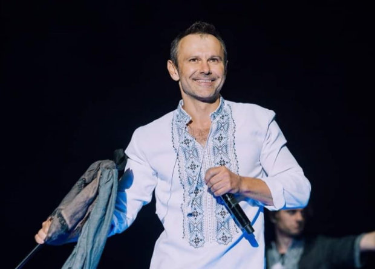

Святослав Вакарчук: біографія
Біографія
Народився 14 травня 1975 року. Знак Зодіаку: Телець. За східним гороскопом: рік Дерев’яного Кролика (Кота). Національність: українець. Віросповідання: православний. Вік: 44 роки. Захоплення: подорожі, музика, спорт, йога, буддизм, японська культура, наука, іноземні мови (знає польську, російську, англійську), КВК. Любить читати книги. Улюблені автори: І. Я. Франко, А. П. Чехов, Л. В. Костенко, М. В. Гоголь. Кумири у музиці: британські рок-групи Rolling Stones, Queen, The Beatles, ще одна британська рок-група, відома своїми філософськими текстами Pink Floyd, американська рок-група Red Hot Chilly Peppers.Сім'я
Раннє дитинство пройшли у Мукачево (Закарпаття). Незабаром після народження першого сина Святослава батьки вирішили переїхати до Львова. Батько, Іван Олександрович (6.03.1947 р.н.), працював у Львові ректором університету. Мати, Світлана Олександрівна (2.06.1947 р.н.), після переїзду до Львова викладала фізику. Вона захоплюється живописом. У Святослава Вакарчука є молодший брат Олег (18.06.1980 р.н.), який обрав банківську кар'єру. Сімейний стан: одружений. Дружина: Ляля Фонарьова (1977 р.н.) Діти: Діана - пара виховує доньку від першого шлюбу дружини.Освіта
У Святослава Вакарчука дві вищі освіти. Перший диплом він отримав у 1996 р. - закінчив Львівський
національний
університет ім. Івана Франка. Згодом теоретик-фізик отримав другу вищу освіту, отримавши кваліфікацію
економіста-міжнародника.
2015 р. - стипендіат міжнародної стипендіальної програми Yale World Fellow Єльського
університету.